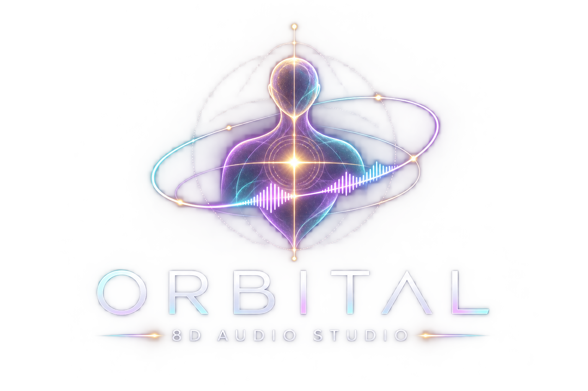

Toca el gráfico para añadir un punto y arrástralo hacia arriba o abajo. La línea central es la altura de los oídos. Los puntos dorados son las paradas programadas. F indica el final.
Marca un punto del recorrido en X o Y. Los tiempos se cuentan desde el punto anterior.